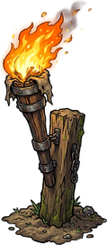
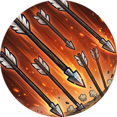
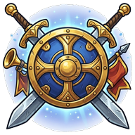
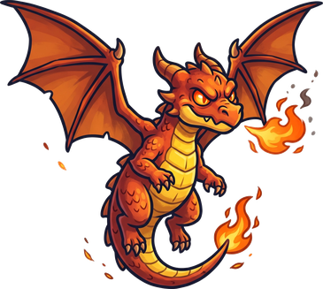
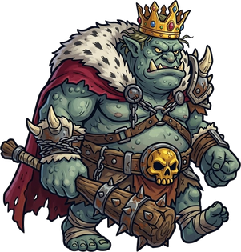
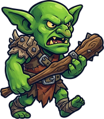
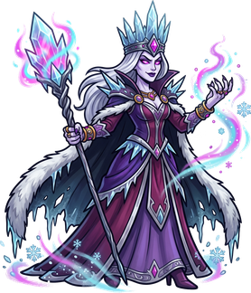

Toque num terreno de pedra e escolha uma torre
Construa torres e proteja a ilha das hordas de monstros




Toque numa fase para ver o desafio e jogar
Os inimigos esperam você voltar.
Os monstros invadiram o castelo.
Novo recorde!